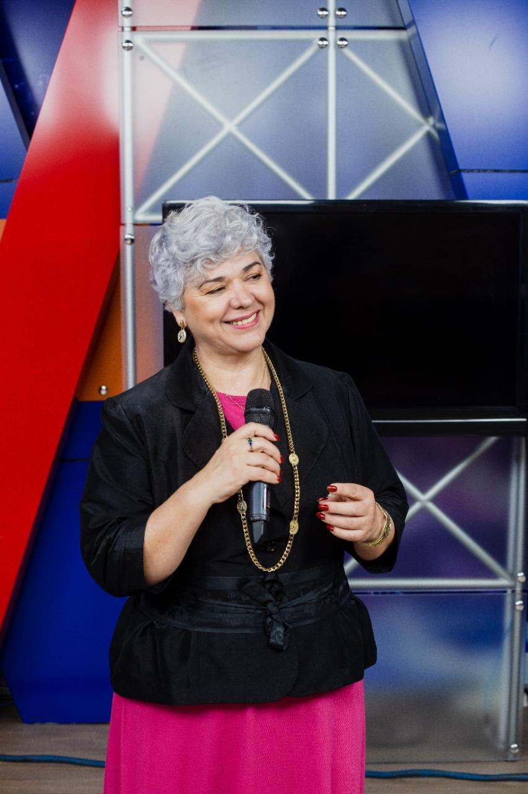
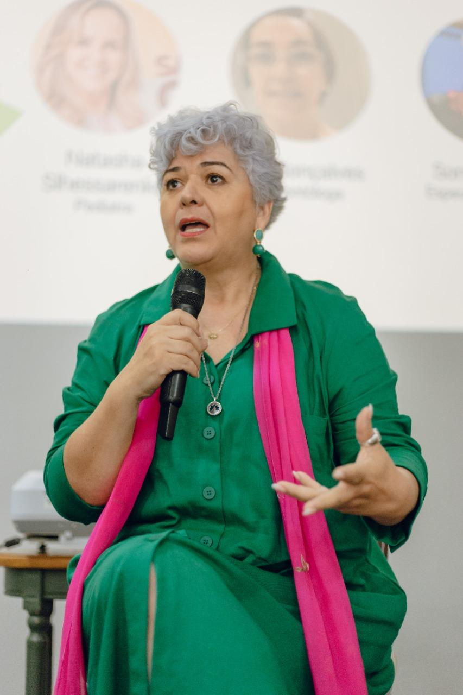
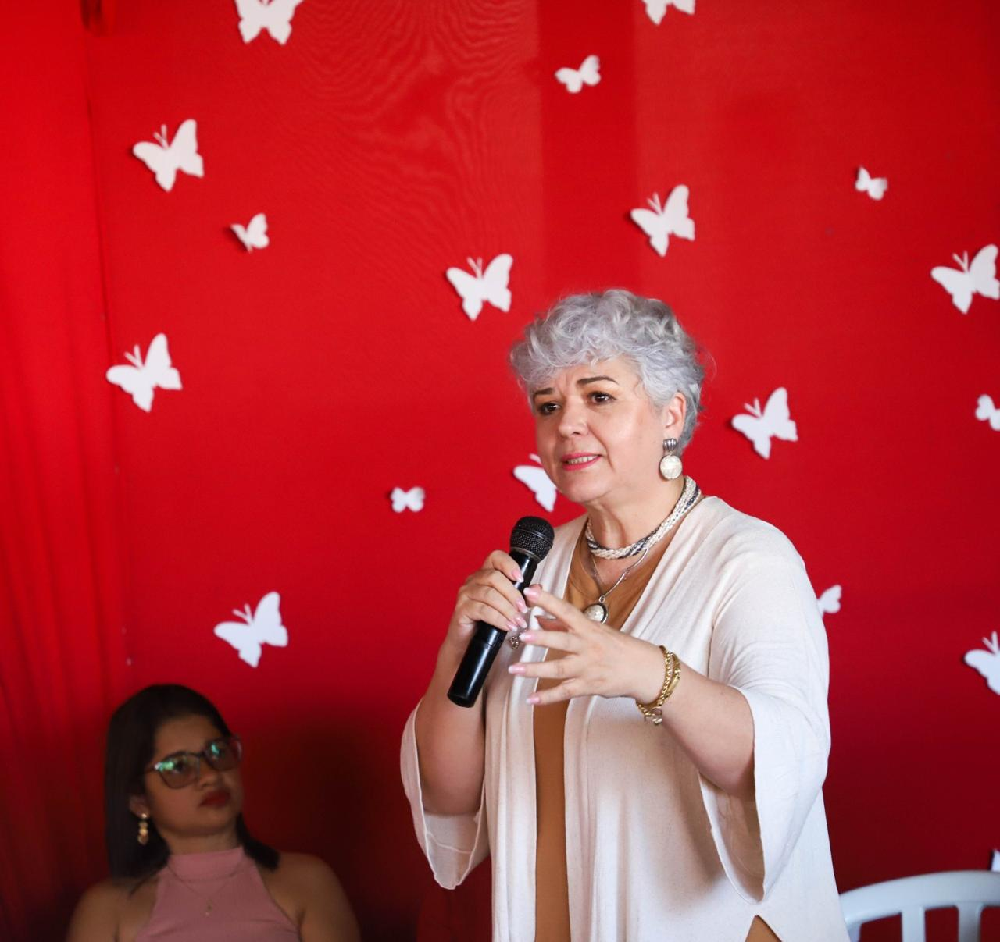
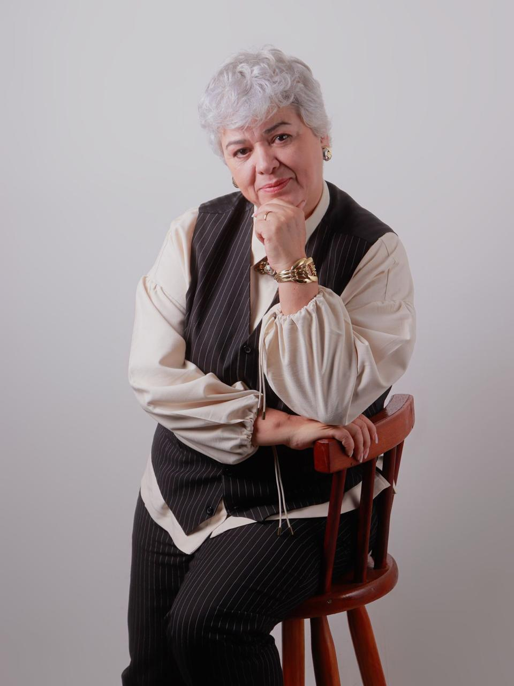

BPW Cuiabá
Presidência do Business Professional Women, rede internacional de mulheres profissionais e de negócios.
Trajetória
Conheça a mulher por trás do método — e o caminho de mais de 30 anos que fez de Sonia Mazetto a 1ª Gestora de Potencial Humano do Brasil.
Quem é Sonia
Antes dos palcos e das empresas, houve o consultório. Foi como fonoaudióloga, em Cuiabá, que Sonia Mazetto descobriu que a voz de uma pessoa carrega muito mais do que palavras — carrega história, medo, desejo e potencial represado.
Essa descoberta virou uma pergunta que ela passaria décadas respondendo de ângulos diferentes: o que impede alguém de se expressar por inteiro? Cada nova formação foi uma tentativa de chegar mais fundo na resposta.
Da soma dessas respostas nasceu um ofício que ainda não existia no Brasil — e o título que ela carrega com mais orgulho.
Linha do tempo
Não foi uma linha reta — foi um acúmulo. Cada território que Sonia atravessou continua vivo no seu trabalho de hoje.
Raízes · Mato Grosso
Cuiabana, Sonia cresceu atenta às pessoas. A sensibilidade para perceber o não-dito viria a se tornar sua principal ferramenta de trabalho.
A clínica
Na clínica, tratou a comunicação como fenômeno do corpo — voz, respiração, articulação. Aprendeu que expressão é técnica, mas nunca só técnica.
A ciência
Levou a prática clínica ao rigor acadêmico, ancorando seu trabalho em método e evidência.
O comportamento
Duas lentes para o que a técnica sozinha não alcança: como a linguagem organiza o pensamento e como a história molda o jeito de cada um falar.
A voz coletiva
À frente do Coral Mato Grosso e de projetos como Canto Alegria, Encanto Sertanejo e Grupo Vozes, comprovou que vozes afinadas juntas transformam ambientes inteiros.
O método
A convergência de tudo em uma metodologia própria — e no pioneirismo de ser reconhecida como a 1ª Gestora de Potencial Humano do Brasil.
Hoje
Palestrante, treinadora da RDanillo Academy, presidente da BPW Cuiabá e colunista semanal — Sonia leva o desenvolvimento humano para onde as pessoas estão.
Formação
A força do método de Sonia está justamente no encontro raro entre ciência, linguagem, profundidade e prática — territórios que quase nunca convivem no mesmo profissional.
“Comunicar não é falar bonito.
É existir inteiro diante do outro.”
Presença & reconhecimento
Presidência do Business Professional Women, rede internacional de mulheres profissionais e de negócios.
Coordenação e regência, unindo música e desenvolvimento humano em projetos culturais e sociais.
Artigos semanais na imprensa e no LinkedIn, e treinamentos como convidada da RDanillo Academy.
Em cena




Mentorias, treinamentos, corais corporativos e palestras — o primeiro passo é conversar com a Sonia.